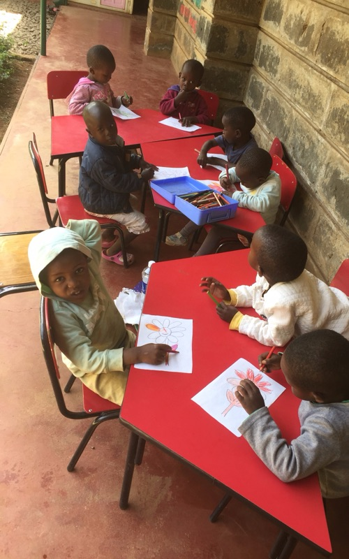
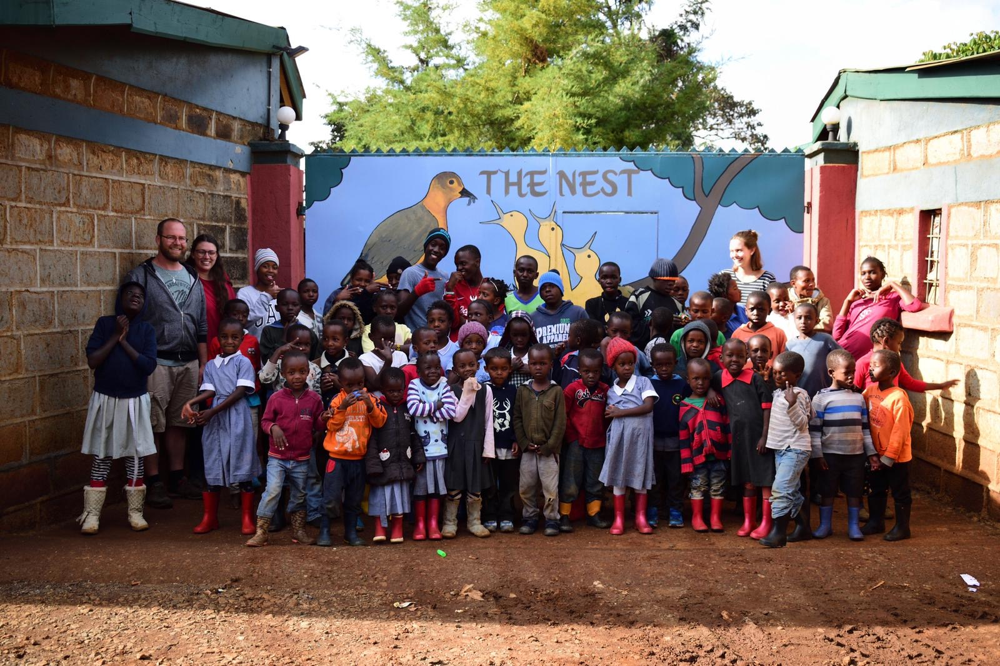
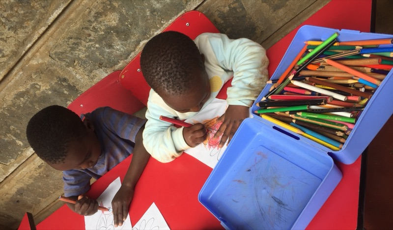
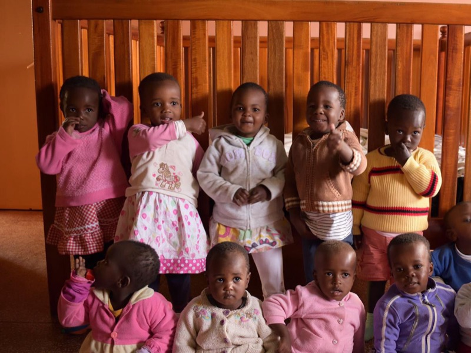
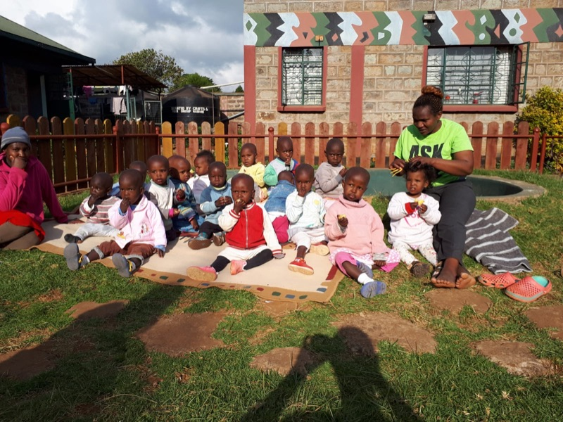
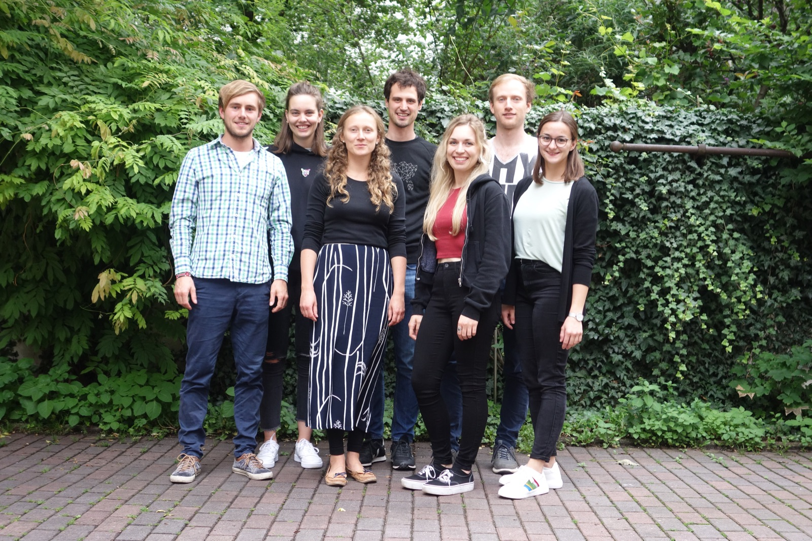
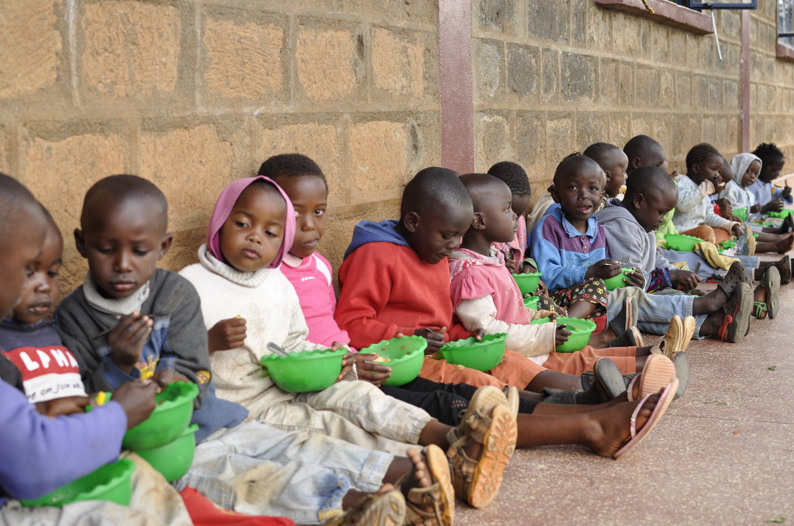

The Nest Children's Home
Tangu 1997, hadi watoto 100 wa umri wa miaka 3 hadi 18 wanalelewa, kusomeshwa na kupata huduma za afya hapa.

Katika makazi ya watoto ya The Nest huko Limuru, Kenya, zaidi ya watoto 140 wanapata hifadhi, chakula, huduma za afya na elimu. Tunahakikisha mchango wako unafika huko – asilimia 100.


Nchini Kenya, akina mama mara nyingi hufungwa kwa makosa yanayotokana na umaskini. Watoto wao hubaki bila mlezi – wengi wangeishia mtaani.
The Nest inawapokea watoto hawa hasa, pamoja na watoto wachanga walioachwa. Inatoa malezi, chakula na elimu, na kuwaunganisha tena akina mama na watoto wao baada ya kuachiliwa. Lengo: kurudisha familia katika jamii kwa msingi imara.
Sisi, shirika la Watoto wa Nest e.V., ni timu changa ya wanaojitolea – wengi wetu tulifanya kazi The Nest kama wanaojitolea. Tunakusanya michango nchini Ujerumani na kuhakikisha inafika The Nest moja kwa moja.
Zaidi kuhusu sisi na The NestThe Nest ilianzishwa mwanzoni mwa miaka ya 1990 kama mpango wa kuzuia na kuwarejesha watoto katika jamii. Leo ina vituo vitatu ndani na karibu na Limuru, kilomita 20 kaskazini-magharibi mwa Nairobi.

Tangu 1997, hadi watoto 100 wa umri wa miaka 3 hadi 18 wanalelewa, kusomeshwa na kupata huduma za afya hapa.

Makazi ya watoto wachanga – yaliyofunguliwa Machi 2014 – yanawalea watoto wachanga walioachwa, mchana na usiku.

Hapa akina mama walioachiliwa wanaunganishwa tena na watoto wao na kusaidiwa na wafanyakazi wa kijamii katika safari ya kurudi katika jamii.
The Nest inafadhiliwa kikamilifu na michango ya watu binafsi. Mchango wako unatumika kwa watoto na akina mama walioko huko pekee.
Chagua kiasi uone kinachofanikisha – kisha changia kwa urahisi mtandaoni kupitia PayPal au kwa uhamisho wa benki.
Michango inapunguzwa kodi nchini Ujerumani. Risiti ya mchango ukiomba.
Wanachama wote hufanya kazi bila malipo. Gharama za utawala chini ya asilimia 1.
Kiasi ulichochagua: €40 – kiandike kwenye PayPal. Salama kwa akaunti ya PayPal au kadi ya mkopo, mara moja au kila mwezi. Vinginevyo kupitia betterplace.org.

Tunatoka nchi mbalimbali na tuna lengo moja: kusaidia The Nest kwa njia endelevu.
Wengi wetu tumefanya kazi The Nest kwa miezi kadhaa na tunajua watoto wanahitaji nini. Kazi zetu kuu mbili: kukusanya michango na kuwaunganisha wanaojitolea na kazi huko Limuru.
Changia kwa jina la mtu unayempenda na upate cheti cha zawadi cha kibinafsi cha kuchapisha – kuanzia vifaa vya shule hadi mshahara wa mwezi wa muuguzi.

Tunaandika tu kunapokuwa na jambo la kusimulia: ripoti kutoka Limuru, kampeni, na mchango wako umefanikisha nini.